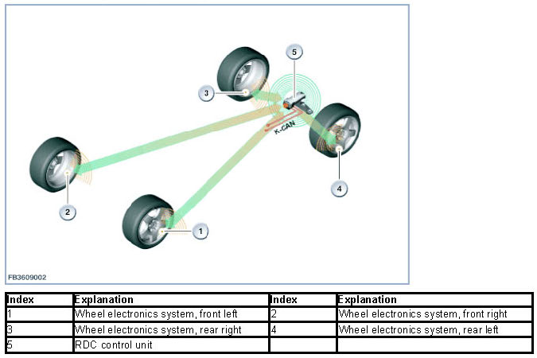
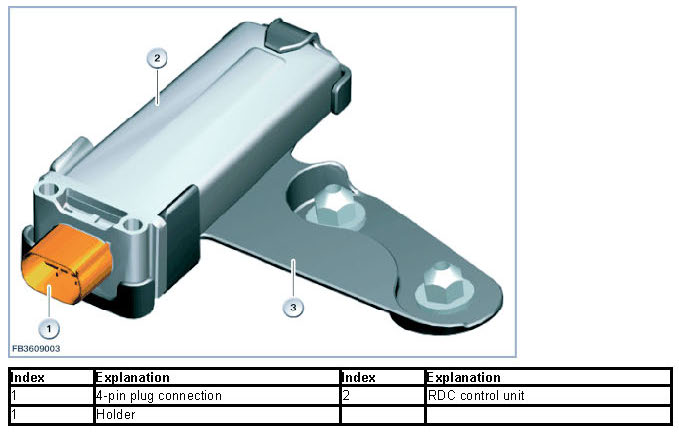
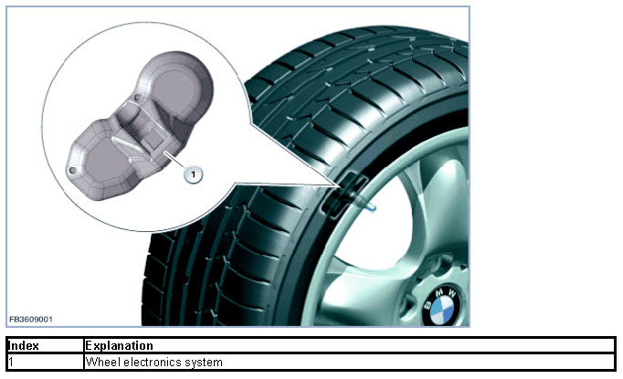

Tire Pressure Monitor
Tire Pressure Monitor
Tire Pressure Monitor (RDC)
The Tire Pressure Monitor (RDC) is a system which monitors the tire pressure while the vehicle is in motion. It is offered exclusively in the USA (legal requirement) and as optional equipment (SA2VB) in Canada.
The system of the new generation (Generation 3) now consists only of 5 components: the RDC control unit (control unit with integrated reception aerial) and 4 sets of wheel electronics.

Assignment of wheels
Axle assignment and identification of direction of rotation can help to assign the Identification Feature (ID) of the wheel electronics to a defined installation position.
Axle assignment:
The RDC control unit is installed close to the rear axle. For this, the messages on the wheel electronics from front axle and rear axle differ to varying extents. The averaged signal strengths of the wheel electronics systems thus indicate the axle assignment. Since the RDC control unit is installed to the rear of the vehicle, the wheel electronics on the rear axle receive signals at a higher level of receiving power than those on the front axle. Axle assignment runs parallel in time to the identification of direction of rotation. In the calculation of signal strengths, only wheels rotating in the same direction (on each side of the vehicle) are taken into account.
Identification of direction of rotation:
The wheel electronics have a combined acceleration sensor to detect swivel motion and direction of rotation. This identification takes place in the starting process or during driving. When swivel motion is detected, a message is sent. In this message, an additional item of information is present via which the direction of rotation is communicated to the RDC control unit. The result of identification for the direction of rotation can assume the following statuses:
- Standstill
- Clockwise direction
- Counterclockwise direction
- unknown
RDC control unit
The RDC control unit processes the messages sent by the wheel electronics. Above a speed of 20 - 30 km/h, the following messages are sent by the electronics on each wheel:
- Tire inflation pressure
- Tire air temperature
- Remaining service life of the battery
- Data from the acceleration sensor and Identification Feature (ID) of the wheel electronics
These messages are then transmitted directly to the RDC control unit via a high-frequency transmission path (433 MHz), where they are then evaluated. The measuring cycle of the wheel electronics amounts to 3 second, with transmission to the RDC control unit taking place every 30 seconds. The current status of the messages is sent to the CAN bus (body CAN) and is then rendered visible by the indicating instruments. The installation location for the RDC control unit is in the outer area on the vehicle underbody behind the rear axle.

Structure and inner electrical connection
All 4 pins on the plug connection of the RDC control unit are always assigned.
Diagnosis instructions for RDC control unit
If the RDC control unit fails, the following behavior is to be expected:
- Check Control message
- Indicator and warning light lights up
Wheel electronics
In all wheels, wheel electronics systems are installed in the wheel drop centre. The wheel electronics systems are bolted onto the filling valves (made of metal). All wheel electronics systems are common parts. The valid operating temperature lies between -40 °Celsius and +125 °Celsius. The wheel electronics monitor the actual temperature in the tire. If the temperature is greater than approx. 115 °Celsius, the RDC switches into a mode with restricted functionality. Under certain circumstances, a hardware shutdown takes place.
When stationary, the wheel electronics perform a cyclical roll identification process in order to identify a starting process. During the starting process, a measuring cycle lasting for 3 seconds is observed. While the vehicle is being driven, a repeated and cyclical roll identification process is performed to confirm and to end driving operations with a measuring cycle lasting for 60 seconds.
At regular intervals (every 3 seconds), the wheel electronics measure the tire pressure and the temperature in the wheel electronics. These measured data are transmitted to the RDC control unit automatically in a regular transmission (every 30 seconds) from the tire to the RDC control unit. In the event of a pressure change greater than 0.2 bar within two consecutive pressure measurements or fast tire pressure loss, the wheel electronics switch immediately into a rapid transmission mode. In this case, the wheel electronics measure and transmit measuring data from the tires at short intervals (1 second). Every set of wheel electronics is equipped with its own Identification Feature (ID) to enable it to be identified by the RDC control unit. This Identification Feature is transmitted together with every data transfer.

The wheel electronics are supplied with power by a lithium ion battery. The service life is designed for approx. 10 years. The remaining service life is displayed with a resolution of 1 month accuracy. To avoid any unnecessary load on the state of charge of the battery, the wheel electronics operate in 5 different operating conditions. In which operating condition (mode) a set of wheel electronics perform a measurement or transmit a radio signal depends upon:
- Tire inflation pressure
- Tire air temperature
mode Explanation
0 Mounting
1 Normal transmission mode for stationary mode and driving
2 Fast transmission mode after identification of a fast pressure change
3 Fast transmission mode prior to a shutdown due to excess temperature
4 Detection of direction of rotation in the starting process
Structure and inner electrical connection
The wheel electronics system consists of a plastic housing. The plastic housing contains a printed circuit board and the following components:
- Pressure sensor
- Temperature sensor
- Acceleration sensor
- Transmission and receiving equipment
- Evaluation electronics
- Battery
Diagnosis instructions for the wheel electronics
If the wheel electronics system fails, the following behavior is to be expected:
- Fault entry in the RDC control unit
- Check Control message
- Indicator and warning light lights up
The state of charge as well as the residual runtime of the battery in the wheel electronics system can be shown in the BMW diagnosis system. The battery of the wheel electronics system cannot be renewed.
Diagnosis instructions for service
NOTICE: Checking the wheel electronics.
The only external way to establish if a set of wheel electronics has been installed is to examine the aluminium screw valve. The only way to check if the correct set of wheel electronics has been installed is by first dismantling the tire. Regrettably, for technical reasons, it is not possible to submit a query via the diagnosis system.
NOTICE: Deactivation of an active wheel electronics system
It is not possible to deactivate a wheel electronics system that has already been activated. If ever the vehicle is at a standstill for extended periods (more than 5 minutes), the wheel electronics transmits no radio signal. The only way to switch the wheel electronics into a transmit mode is to drive at a speed in excess of 30 km/h.
NOTICE: Preconditions for initialization.
An initialization of the tire pressure control must be performed in the following cases:
- The tire inflation pressure is changed.
- A wheel exchange is carried out. The exchanged wheels must be equipped with the correct wheel electronics systems.
- Axle-wise wheel exchange on the vehicle.
- Diagnosis instruction
During the initialization process, the existing inflation pressure is transferred as a specification for the nominal pressure.
The driver is personally responsible for setting the correct inflation pressures on cold tires in accordance with the operating instructions. Depending on the series,various operating points are possible for the initialization process:
- operation of the central information display (CID)
- operation of the instrument panel via the drop arm
- operation of the radio
- operation by button
This must be done with the vehicle at a standstill and with terminal 15 ON. The RDC acknowledges the initialization process with a display on the instrument panel, radio or CID. These Check Control messages remain visible until the initialization process has terminated. At the end of the initialization process, all warning lights go out.
The RDC control unit checks the plausibility of the nominal value before adopting it (minimum pressure). Any initialization is only possible if the inflation pressure in all wheels is at least 1.6 bar. If the tire pressure of one wheel falls below this limit, a Check Control message is issued immediately.
Remedy: Set inflation pressures to correct values then repeat the initialization process. If the initialization process is forgotten after wheel exchange or after replacing the wheel electronics, the driver is asked to perform the initialization process on vehicles equipped with an iDrive ('intelligent Drive') control centre.
Internal procedure after an initialization has been triggered (reset):
1. Recognition of the fitted wheel electronics systems
2. Identifying of the position of the wheel electronics systems
3. Plausibility check by checking the nominal pressures against the minimum pressures
4. Adoption of the specified pressures as nominal pressures
The tire inflation pressure increases by 0.1 bar per 10 °C increase in temperature. If the temperature -evaluated limit values are not reached, the Tire Pressure Monitor issues a Check Control message.
During the initialization process, the control unit functions (measured data of wheels 1 - 4) contain substitute values until the wheel allocation is complete (e.g. 6.4 bar; 127 °Celsius).
To finalize the assignment of wheels successfully, the vehicle must be driven for at least 12 minutes at a speed in excess of 30 km/h.
National-market versions
USA, Canada
Transmission frequency of the system: 433 MHz
Reception frequency of the system: 125 kHz (only for Development and the manufacturing plants)
We can assume no liability for printing errors or inaccuracies in this document and reserve the right to introduce technical modifications at any time.